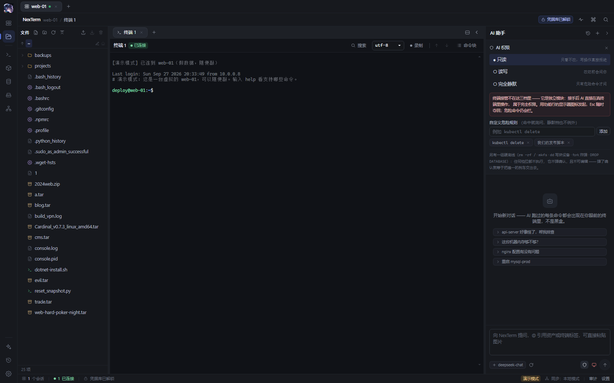
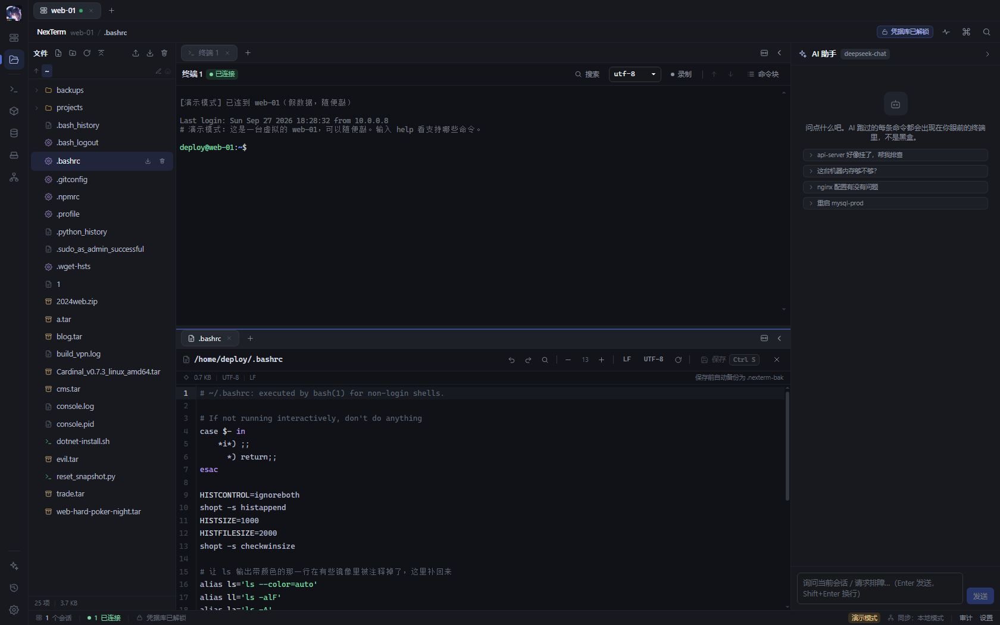

文件
SFTP 虚拟滚动、带断点续传的传输、内置编辑器与 MD5 / SHA256 校验。
不是功能堆叠，而是把命令、文件、数据与 AI 放进同一条工作流。
命令以卡片进入对话流，展开可见完整输出与退出码；危险操作一律拒绝，敏感操作先经确认。

工作区、分屏面板、标签三层结构；一台资产一条连接复用，断线按指数退避自动重连。

SFTP 虚拟滚动、带断点续传的传输、内置编辑器与 MD5 / SHA256 校验。
MySQL 库表浏览与 SQL 工作台；Redis SCAN 分页、类型感知查看与命令台。
容器列表、日志 follow、容器终端、镜像管理与容器文件浏览。
本地转发与 SOCKS5 动态转发复用已有会话，直达内网资源。
两级密钥信封加密，日志自动脱敏；管理面板呈现引用关系与删除保护，支持 Windows DPAPI 免主密码模式。
主密码 → Argon2id → KEK → 信封加密 DEK → XChaCha20-Poly1305在线演示运行完整界面：虚拟 shell、资产树、文件管理、数据库面板与 AI 对话全部可操作，无需安装任何软件。
立即体验当前目标平台为 Windows，构建依赖 Rust stable MSVC、Node 22+ 与 pnpm 9+。
$ git clone https://github.com/ProbiusOfficial/NexTerm.git $ cd NexTerm $ pnpm install $ pnpm tauri build # 产出 NSIS 安装器 # 本地开发窗口 $ pnpm tauri dev